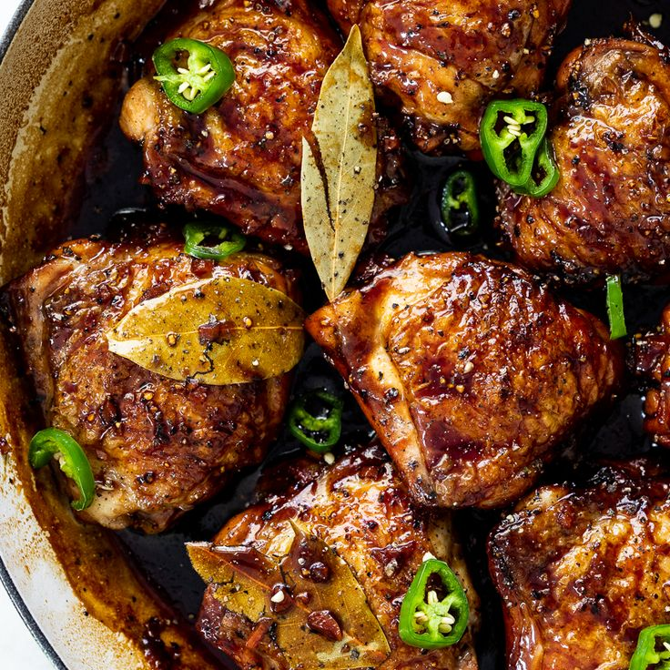

Adobo Recipes

What is Adobo?
Chicken adobo, or adobong manok in Filipino, is a classic Filipino dish featuring chicken braised in a savory and tangy sauce of soy sauce, vinegar, garlic, bay leaves, and black peppercorns. It's a simple yet flavorful dish known for its distinctive balance of sweet, salty, and sour tastes.
2 tablespoons vegetable oil
1 (3 pound) chicken, cut into pieces
1 large onion, quartered and sliced
2 tablespoons minced garlic
⅔ cup low sodium soy sauce
⅓ cup white vinegar
1 tablespoon garlic powder
2 teaspoons black pepper
1 bay leaf
Directions
Heat vegetable oil in a large skillet over medium-high heat. Cook chicken pieces until golden brown, 2 to 3 minutes per side. Transfer chicken to a plate and set aside.
Add onion and garlic to the skillet; cook until softened and brown, about 3 to 5 minutes.
Pour in soy sauce and vinegar and season with garlic powder, black pepper, and bay leaf.
Return chicken to pan, increase heat to high, and bring to a boil. Reduce heat to medium-low, cover, and simmer until chicken is tender and cooked through, 35 to 40 minutes.